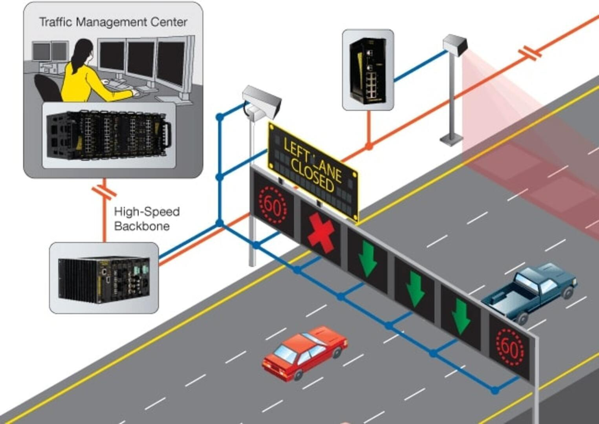

Design and Implementation of a Dynamic Traffic Signal System with Digital Circuit and IoT Integration for Efficient Traffic Management
Published in November-2023
Traffic congestion and inefficiencies in traffic management systems continue to be a major problem in many cities around the world, including India. In this research, we aim to propose a dynamic, sensor-based traffic signal system that addresses the inefficiencies of static traffic management systems in India. The system proposed in this paper adapts the timing of signals based on traffic density on each lane and includes an IoT-based emergency override feature for an ambulance or VIP guest arrivals. We have also implemented a digital circuit that uses a decoder with select lines to manage and keep multiple lanes active at the same time without interference. This study includes a Verilog implementation of the digital circuit and a GUI-based Python implementation of the decoder-based circuit, which shows that the proposed system can significantly improve traffic management, reduce delays and congestion, and provide a more efficient response to emergencies. By combining sensor technology, IoT capabilities, and digital circuitry, the proposed system represents a significant step forward in traffic signal management and has the potential to be implemented in other cities and countries facing similar challenges.
